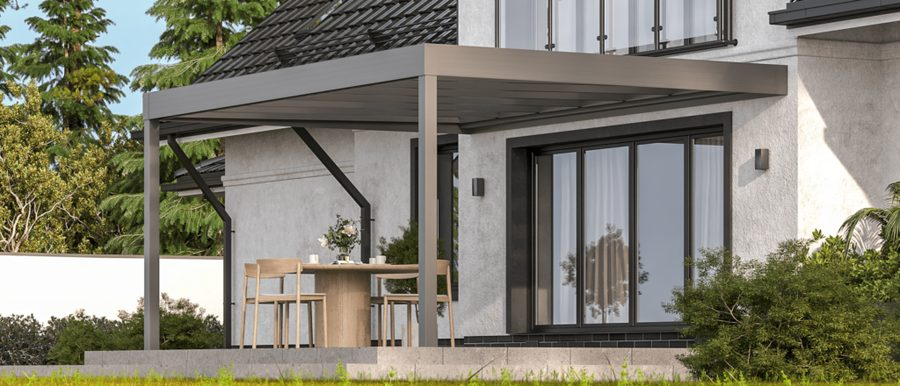
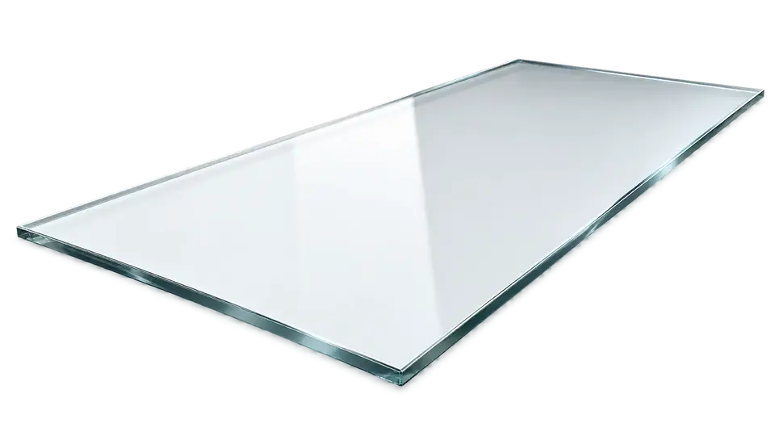
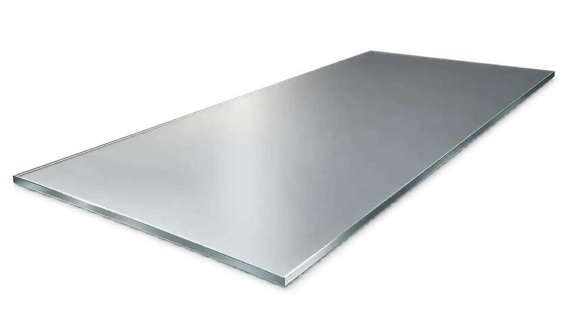
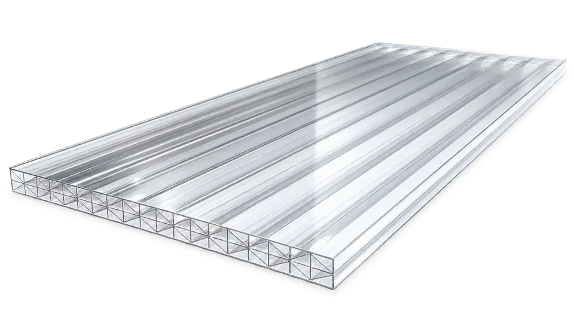
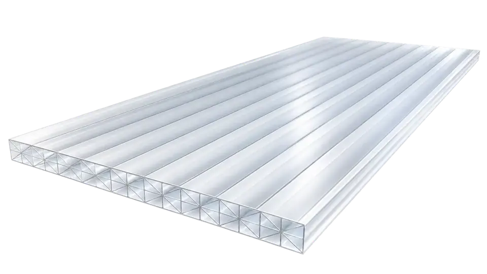
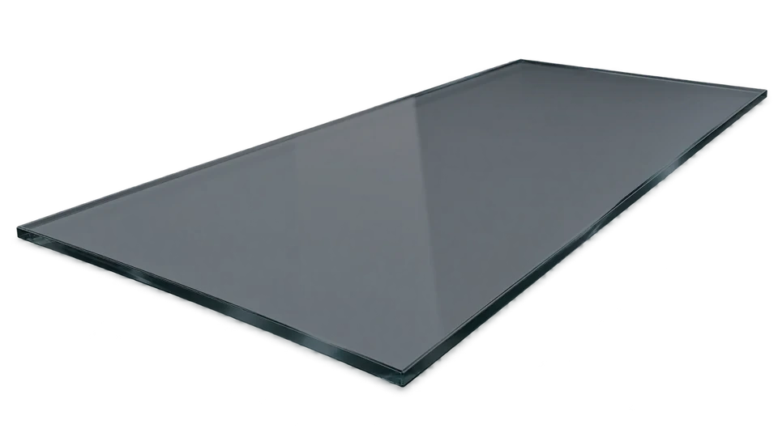
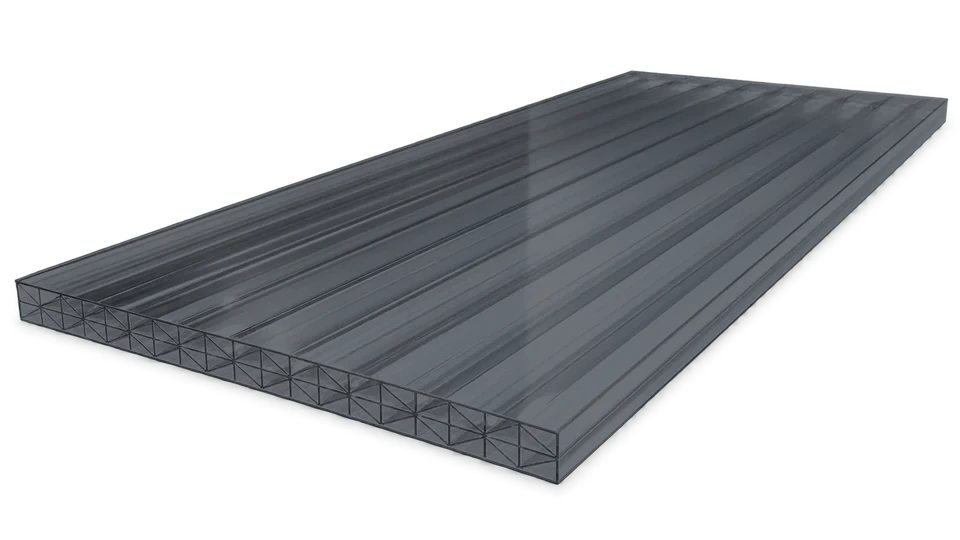
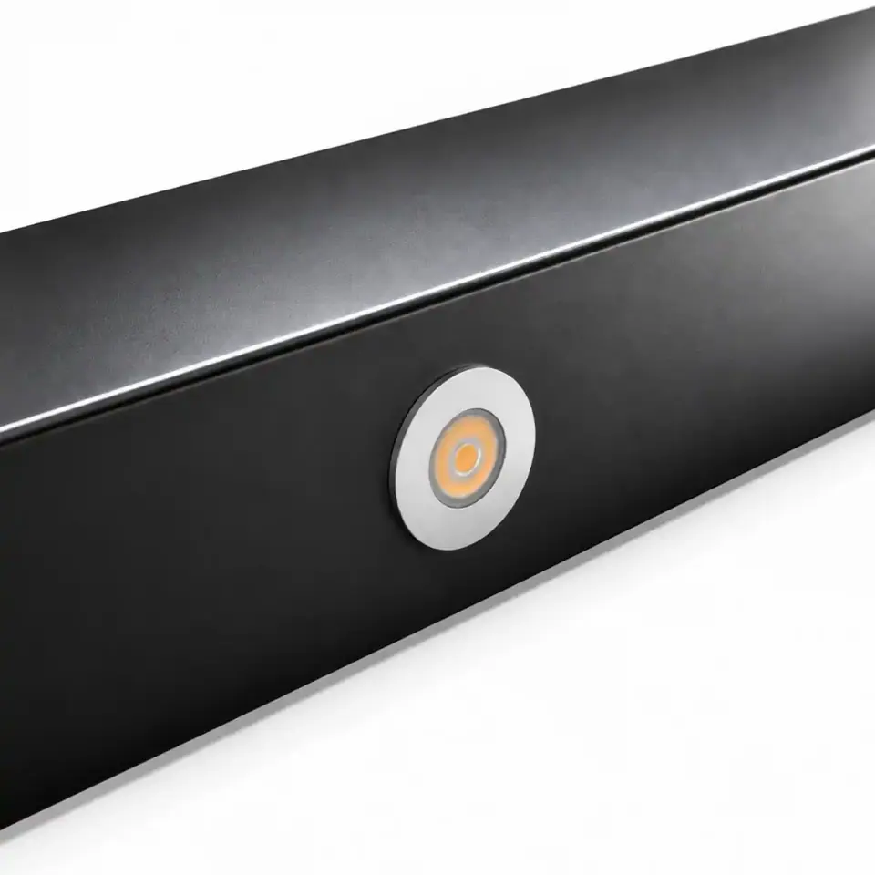
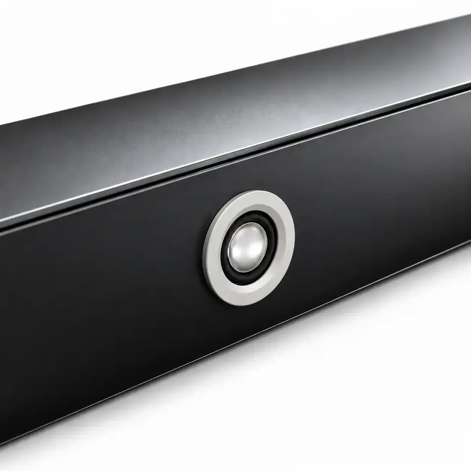

Unsere Modelle
Terrassenüberdachung: unsere Modelle
Alle Produkte werden maßgefertigt, CE-gekennzeichnet und mit vereinfachtem Statiknachweis geliefert. Ob Ihr Bauamt damit auskommt oder eine prüffähige Einzelstatik verlangt, hängt vom Bundesland und von der Größe des Vorhabens ab. Das klären wir vorab mit Ihnen.

Terrassendach TDS
Das TDS ist unser Bestseller, und das aus gutem Grund. Klare Linien, robuste Aluminiumprofile, verfügbar mit Polycarbonat- oder Glasdach. Passt an jede Wand, steht freistehend, lässt sich erweitern. Wir fertigen exakt auf Ihr Maß. Keine Standardlösungen vom Regal.
- Aluminium-Profile, pulverbeschichtet
- Standardfarben inklusive: Anthrazit (RAL 7016), Weißaluminium (RAL 9006), Graualuminium (RAL 9007), Reinweiß (RAL 9010)
- Wunschfarbe (weitere RAL-Farben) gegen Aufpreis möglich
- Verglasung: 8 mm VSG-Glas (bis 88% Lichtdurchlässigkeit) oder 16 mm Polycarbonat (bis 70% Lichtdurchlässigkeit)
- Wandanbau oder freistehend
- Erweiterbar mit Schiebeelementen & Markisen
- Auf Wunsch mit verzinktem Trapezblech statt lichtdurchlässiger Eindeckung
- Zubehör: dimmbare LED-Spots, Bluetooth-Lautsprecher
- 10 Jahre Herstellergarantie auf die Aluminiumkonstruktion, 2 Jahre auf die Elektrik · CE-gekennzeichnet
- Vereinfachter Statiknachweis Wind- & Schneelasten inklusive

Flachdach SkyView
Flach, modern, beeindruckend. Das SkyView gibt Ihrer Terrasse einen Charakter der bleibt. Innenliegendes Gefälle: von außen unsichtbar, technisch perfekt. 8 mm VSG-Sicherheitsglas ist Standard. LED und Lautsprecher auf Wunsch. Für alle die etwas Besonderes wollen.
- 8 mm VSG-Sicherheitsglas inklusive: klar (88% Licht, 36dB Schallschutz) oder opal (63% Licht, blickdicht)
- Auf Wunsch mit Mattfolie, mit wärmereflektierender Beschichtung oder in 16 mm
- Mindestens 2 Grad Dachneigung. Das Gefälle läuft innen und bleibt von außen unsichtbar
- Rinnenabdeckung flach, rund oder gerade
- Optional: LED-Beleuchtung & Lautsprecher
- Standardfarben: Anthrazit (RAL 7016), Weißaluminium (RAL 9006), Graualuminium (RAL 9007). Reinweiß gibt es beim Flachdach nicht, Wunschfarbe nach RAL gegen Aufpreis
- Unterdach- und Senkrechtmarkise möglich. Eine Aufdachmarkise passt bauartbedingt nicht auf das Flachdach
- Wandanschluss, Eck-, Nischen- oder XXL-Variante
- Schiebeelemente in Polycarbonat, Glas oder Alu
- 10 Jahre Herstellergarantie auf die Aluminiumkonstruktion, 2 Jahre auf die Elektrik · CE-gekennzeichnet
- Vereinfachter Statiknachweis inklusive
Die beiden Modelle nebeneinander
| Terrassendach TDS | Flachdach SkyView | |
|---|---|---|
| Dachform | Geneigt, klassische Linie | Flach. Das Gefälle liegt innen und ist von außen nicht zu sehen |
| Verglasung | 8 mm VSG-Glas oder 16 mm Polycarbonat | 8 mm VSG-Glas, klar oder opal |
| Lichtdurchlass | bis 88 % mit Glas, bis 70 % mit Polycarbonat | 88 % klar, 63 % opal (blickdicht) |
| Aufstellung | An der Wand oder freistehend | Wandanschluss, Ecke, Nische oder XXL |
| Erweiterbar | Schiebeelemente und Markisen | Schiebeelemente in Polycarbonat, Glas oder Aluminium |
| Beschattung | Aufdach-, Unterdach- und Senkrechtmarkise | Unterdach- und Senkrechtmarkise. Keine Aufdachmarkise |
| Passt, wenn | Sie zwischen Glas und Polycarbonat wählen möchten | das Dach flach sein soll und die Entwässerung nicht zu sehen |
Bei beiden gleich: 10 Jahre Herstellergarantie auf die Aluminiumkonstruktion, 2 Jahre auf die Elektrik, CE-Zertifizierung und vereinfachter Statiknachweis für Wind- und Schneelast. Alle Maße nach Aufmaß gefertigt.
Glas oder Polycarbonat?
Die Eindeckung entscheidet über drei Dinge: wie hell es unter dem Dach wird, wie viel Sonnenwärme durchkommt und wie laut der Regen klingt. Glas dämpft Regengeräusche deutlich stärker als Polycarbonat. Opale Platten streuen das Licht und mindern die Blendung.

VSG-Glas 8 mm, klar
Das meiste Tageslicht und freier Blick nach oben.
- Tageslicht88 %
- Sonnenwärme85 %
- Schalldämmung36 dB
- Stärke8 mm

VSG-Glas 8 mm, opal
Streut das Licht und nimmt die Blendung heraus.
- Tageslicht63 %
- Sonnenwärme52 %
- Schalldämmung36 dB
- Stärke8 mm

Polycarbonat 16 mm, klar
Leichte Stegplatte, hell und bruchfest.
- Tageslicht70 %
- Sonnenwärme62 %
- Schalldämmung21 dB
- Stärke16 mm

Polycarbonat 16 mm, opal
Gleichmäßiges Licht ohne harte Schatten.
- Tageslicht55 %
- Sonnenwärme54 %
- Schalldämmung21 dB
- Stärke16 mm

VSG-Glas 8 mm, grau/graphit
Dunkel getöntes Glas. Nimmt Sonne und Blendung spürbar zurück.
- Tageslichtauf Anfrage
- Sonnenwärmeauf Anfrage
- Schalldämmung36 dB
- Stärke8 mm

Polycarbonat 16 mm, graphit
Getönte Stegplatte. Deutlich weniger Licht und Wärme als die klare.
- Tageslichtauf Anfrage
- Sonnenwärmeauf Anfrage
- Schalldämmung21 dB
- Stärke16 mm
Tageslicht ist der Anteil des sichtbaren Lichts, der durch die Platte kommt. Sonnenwärme der Anteil der Sonnenenergie: je niedriger, desto weniger heizt sich der Platz darunter auf. Die Schalldämmung sagt, wie stark die Platte Regengeräusche dämpft, je höher der Wert, desto leiser. Werte laut Hersteller. Sie gelten ebenso für Carport TDS, Kaltwintergarten sowie Eingangs- und Balkonüberdachung. Auf Wunsch liefern wir das Dach auch mit verzinktem Trapezblech, dann ist es geschlossen und lichtundurchlässig. Für die getönten Platten nennt der Hersteller keine Licht- und Wärmewerte. Beide lassen deutlich weniger durch als die klare Ausführung, wie viel genau, sagen wir Ihnen mit dem Angebot. Eine Zahl, die wir nicht belegen können, schreiben wir nicht hin.
Erweiterungen & Abschlüsse
Stirnseiten, Schiebeelemente & Abschlüsse
Ihre Terrassenüberdachung muss nicht offen bleiben. Wir liefern und montieren alle gängigen Seiten- und Stirnabschlüsse, vom einfachen Festelement bis zur motorisierten Glasschiebetür. Alles passend zum Profil Ihrer Überdachung, maßgefertigt. Zum Aufklappen anklicken:
Der klassische Abschluss: fest montiert, winddicht, in Glas oder Polycarbonat. Schützt vor Wind und Regen von der Seite, ohne die Optik zu beeinträchtigen. Auch mit integrierten Fenstern zum Öffnen erhältlich.
- Verglasung: Glas oder Polycarbonat
- Mit oder ohne integriertes Fenster
- Passend zu allen Profil-Farben der Überdachung
- Als Stirnseite oder Seitenelement montierbar
- Winddicht, witterungsbeständig
Maximale Flexibilität: Die Glasschiebetür lässt sich lautlos zur Seite schieben, für freien Zugang im Sommer und vollständigen Schutz wenn das Wetter umschlägt. Einzeln oder als Mehrfach-Schiebeanlage erhältlich.
- Einzel- oder Mehrfach-Schiebeanlage
- Verglasung: ESG-Sicherheitsglas oder VSG
- Leichtgängige Alu-Schiene, wartungsarm
- Passend zu TDS, SkyView und anderen Systemen
- Kompatibel mit allen Profilfarben
Velaris-Lamellen als verschiebbares Seitenelement. Steuert Licht, Sichtschutz und Belüftung gleichzeitig. Kann geöffnet, gekippt oder vollständig verschoben werden, obere und untere Hälfte getrennt. Die eleganteste Lösung für den Seitenabschluss.
- Einstellbarer Neigungswinkel der Lamellen, obere und untere Hälfte getrennt
- Verschiebbar: Kaskadensystem platzsparend
- Gleichzeitig Licht-, Sicht- und Windschutz
- Von Hand eingestellt, ohne Motor
- Kombinierbar mit Velaris-Dach
Wenn Ihre Terrasse zum echten Außenzimmer werden soll: Festelemente mit eingebauter Tür, mit oder ohne Glas. Schließt die Überdachung vollständig ab und ermöglicht trotzdem einfachen Zugang. Für private Terrassen und gewerbliche Außenbereiche.
- Tür mit Glas (transparent) oder ohne Glas (Alu-Paneel)
- Einzel- oder Doppelflügeltür möglich
- Profilfarbe passend zur Überdachung
- Für private und gewerbliche Nutzung
- Kombinierbar mit Festelementen und Schiebetüren
Damit Ihre Terrasse auch nach Sonnenuntergang zum Wohnraum wird: dimmbare LED-Minispots direkt im Dachprofil, dazu wasserfeste Bluetooth-Lautsprecher fürs Musikhören unter der Überdachung. Beides steckbare Systeme, die komplett mit installiert werden.


- LED-Minispots dimmbar, inkl. Leitungen, Verteiler, Trafo & Fernbedienung
- Bluetooth-Lautsprecher mit wasserdichter Rückseite, direkt im Profil verbaut
- Lautsprecher als 2er-, 4er-, 6er- oder 8er-Set erhältlich
- Lautsprecherfarben: Anthrazit, Weiß oder Silber
- Steuerung von Licht und Sound per Smartphone oder Fernbedienung
Statik-Sicherheit für dieses Modell prüfen
Wind- und Schneelastzone für Ihren Standort in 30 Sekunden berechnen, kostenlos und ohne Anmeldung.
Ihr nächster Schritt
Jetzt kostenlos beraten lassen
Wir kommen zu Ihnen in den Westerwald: Montabaur, Neuwied, Altenkirchen und Umgebung. Unverbindlich, persönlich, ohne Wartezeit.
Anfrage startenAusführungsbeispiele
Terrassenüberdachung aus Aluminium: 12 Ansichten zum Durchblättern. Herstellerdarstellungen, keine Fotos von uns gebauter Anlagen.